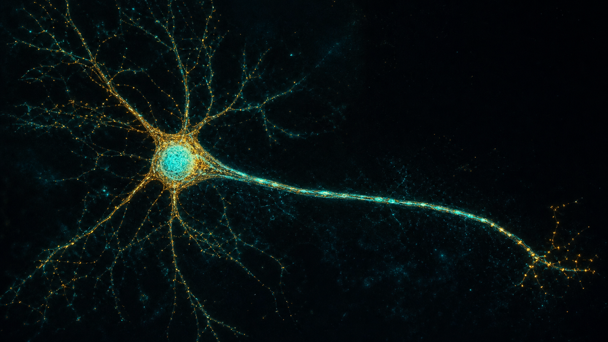
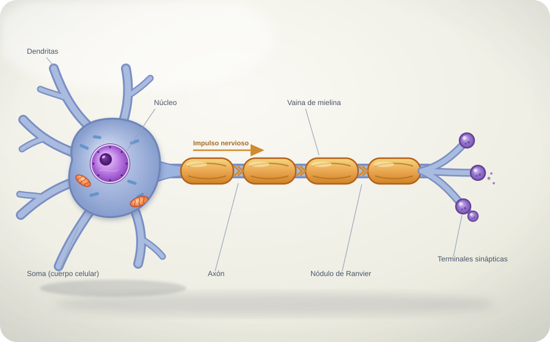

El cartel de la neurona
Un video corto que se repite mientras una voz en off te va explicando, paso a paso, cómo funciona esta célula.

5 ideas, una explicación
Cuando le des Reproducir, el audio se sincroniza con el video y cada idea se ilumina a medida que se nombra.
-
01
La célula que piensa
Una célula animal que te permite pensar, sentir y moverte.
-
02
Soma, dendritas y axón
Tres partes con forma de árbol para recibir, procesar y enviar señales.
-
03
La mielina
Aísla el axón y hace que la señal salte rapidísimo de nódulo en nódulo.
-
04
La sinapsis
Al final del axón, los neurotransmisores pasan el mensaje a otra célula.
-
05
La red
Miles de millones de neuronas forman tu cerebro y todo tu sistema nervioso.
Voz: castellano argentino (TomasNeural). Si tu navegador bloquea el audio, tocá Reproducir cartel otra vez.
Especializada para comunicarse
Su forma responde a su función: las dendritas reciben información, el soma la integra y el axón la lleva a otras células.
La neurona es una célula eucariota animal: tiene núcleo, mitocondrias, retículo endoplasmático y ribosomas. Pero desarrolla prolongaciones únicas. Las dendritas captan estímulos y el axón conduce el impulso nervioso, en muchos casos aislado por la vaina de mielina.
La mielina funciona como el aislante de un cable: la señal «salta» de un nódulo de Ranvier al siguiente y viaja mucho más rápido. Al final, las terminales sinápticas liberan neurotransmisores que pasan el mensaje a la célula siguiente.

La neurona más larga de tu cuerpo va desde la médula espinal hasta el pie: sus prolongaciones pueden medir cerca de un metro, aunque son más finas que un cabello.
¿Qué pasa si la mielina se daña?
Sin mielina, la conducción se vuelve lenta o se interrumpe: como en un cable pelado, la señal se «escapa». Por eso la vaina de mielina es tan importante para que los mensajes lleguen rápido y completos.